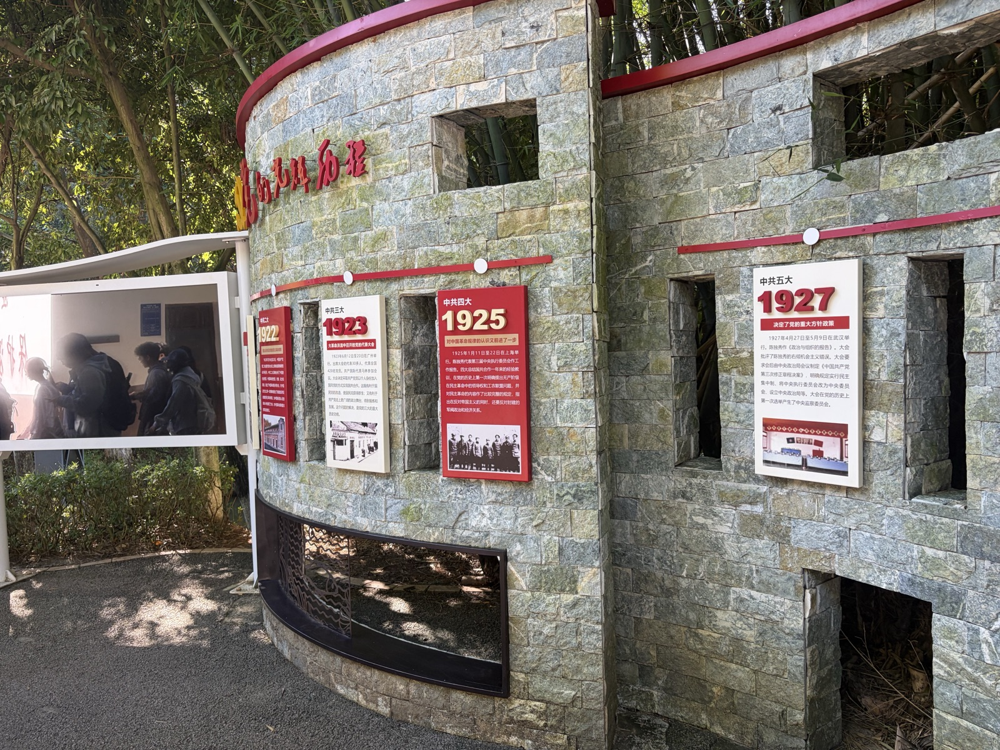
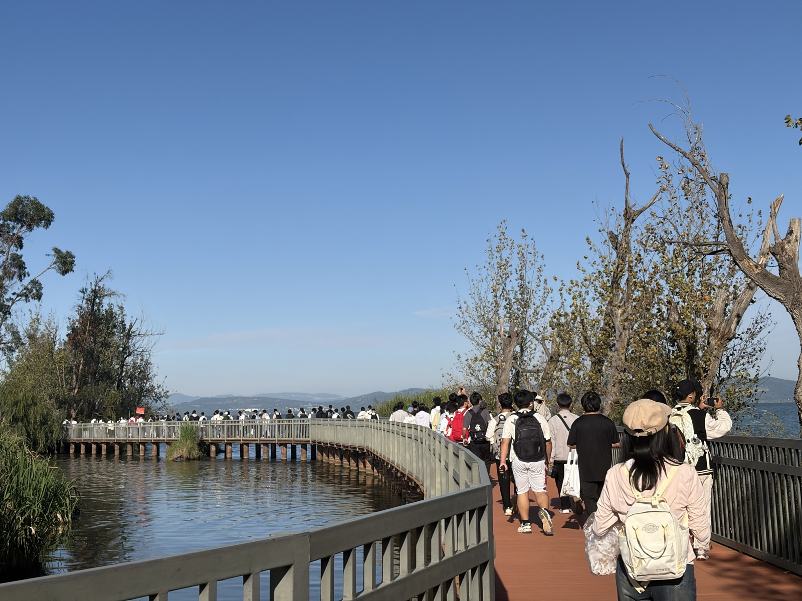

如果说捞渔河主要讲“自然生态”，海晏村则讲“人与自然、村落与发展”。这里既能看到传统村落的历史，也能看到生态治理与文旅发展的新关系。
PAST · 过去
传统渔村
村庄与滇池存在直接的生产关系，临水而居、依湖生活。
→
NOW · 现在
传统村落 + 文旅 + 公共空间
传统建筑、亲水空间和新型业态共同构成今天的村落生活。

传统村落的历史记忆
PAST → NOW
从“直接利用”到“在保护中利用”
人与滇池之间的关系正在发生变化：自然资源不再只是直接生产资料，也成为生态景观、文化价值与公共生活的重要基础。
FIELD OBSERVATION
亲水空间重新连接人和滇池
现场可以看到游客和居民沿着亲水空间活动。生态改善、公共空间和乡村文旅由此形成了新的联系。

亲水步道 · 公共休闲空间
220万+
2024年游客量
昆明信息港 · 2025-03-31
1.05亿
2024年消费总额
昆明信息港 · 2025-03-31
380万
2024年村集体经济收入
昆明信息港 · 2025-03-31
360
新增就业岗位
昆明信息港 · 2025-03-31
数据说明：公开报道中的游客、消费、集体经济等指标用于观察村落发展趋势，不等于本次现场调查自行测得的数据。
CONTINUE TO03 / CHANGE · 滇池的变化
→